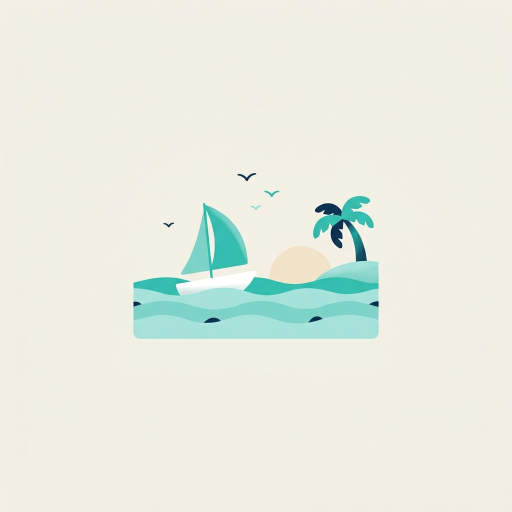
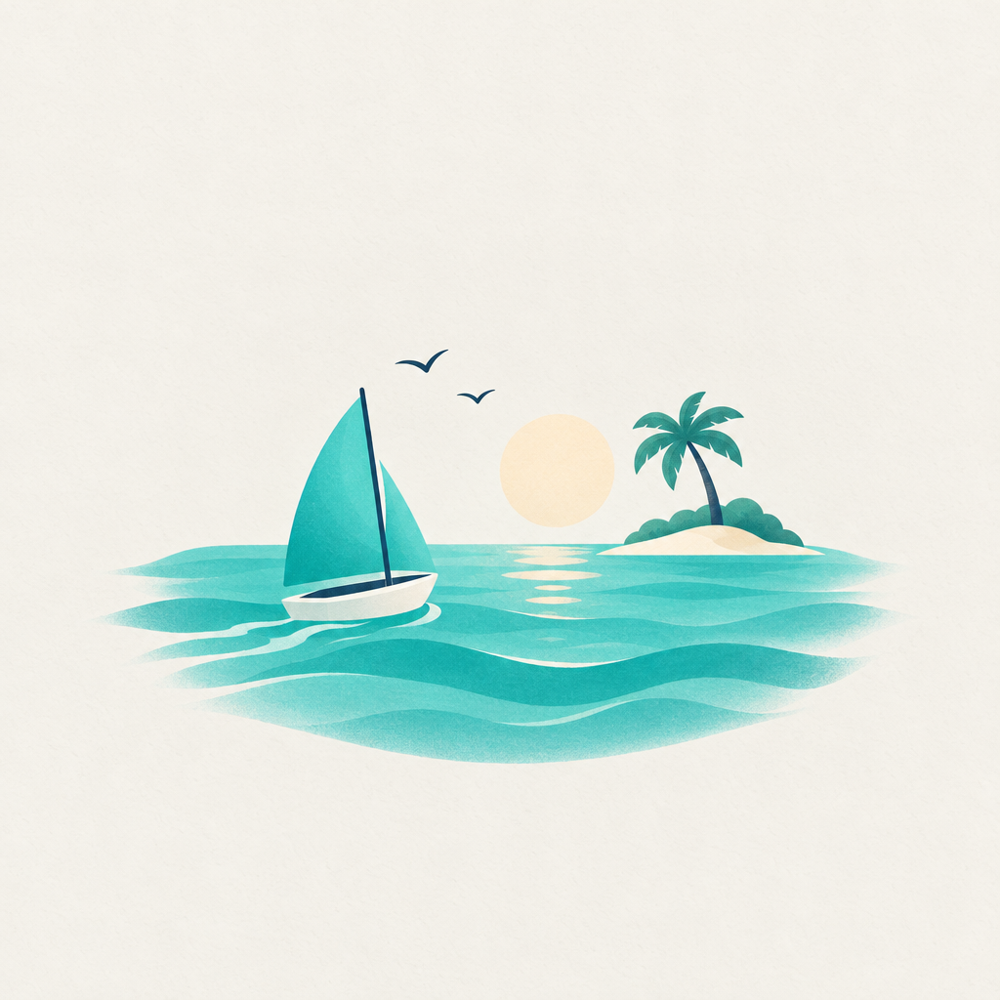
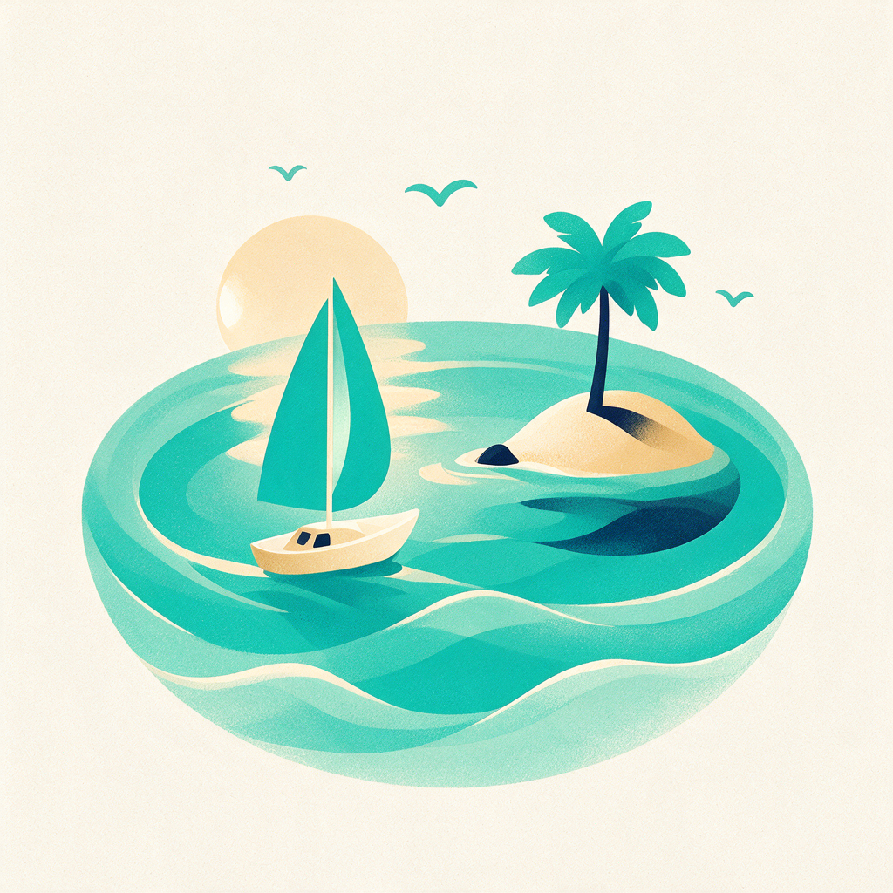

google/nano-banana-2-1

openai/gpt-image-2-5-sunburst

bytedance/seedream-v5-pro
Liman Bank — Birikim Hedefi, Kâşif yönü. Tek metin prompt'u üç modele değiştirilmeden gönderildi; hepsi yalnız metinden üretti.



Kurgusal senaryo, eğitim amaçlı. Toplam maliyet: 0,1316 $